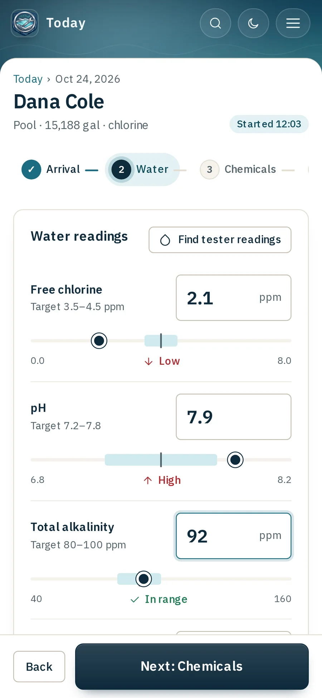

A visit in six steps
Arrival, water, chemicals, tasks, photos and notes, then finish. Readings show low, in range or high as the tech types, in words, not just colour.
Dose suggestions come from your targets. Nothing counts as added until the tech records it.